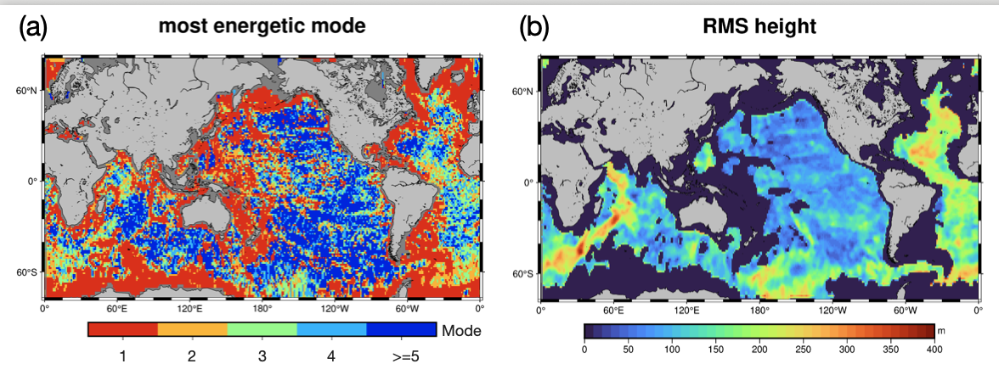

YAO YU
yayu@ucsd.edu
Schmidt AI in Science Postdoc, UCSD
Scripps Insitution of Oceanography
Research
A major challenge in physical oceanography is the limited understanding of small-scale dynamics and turbulence. I am interested in the generation, propagation, and breaking of coupled internal tides and small ocean eddies. These processes often occur near the seafloor, which it intricate on its own. My past research projects/publications are listed on CV and Google Scholar. Ocean signals have been treated as noise in marine geophysical sensing and in the future I look forward to extract ocean signals from e.g., Marine electromagnetic data, Distributed Acoustic Sensing data.
Current Projects
- I am handpicking small seamounts using the Vertical Gravity Gradient (VGG) map from SWOT.
- Do abyssal hills exhibit periodicity and symmetrical patterns? Are the extremely long abyssal hills observed by SWOT real and what processes are responsible for their formation?
- What role do abyssal hills, the most abundant landform on Earth, play in shaping ocean dynamics?
- In search of Taylor columns using SWOT and PACE satellites
This work is going on with undergraduate student Martin Hawks. Taking close looks on global map also allow us to see unexpected structures. Anyone can advise me what is in the red circle in this VGG map? The bright spot suggests a seamount, but what is the hole next to it? kmz file can be accessed through: the topex ucsd site.

This figure is from a manuscript currently under review. It shows that the dominant mode of M2 internal tides (a) is strongly influenced by the height of abyssal hills (b). At fast-spreading ridges, where abyssal hills are low and narrow, high-mode internal tides are more likely to be generated. These tides tend to break locally, enhancing mixing near the generation site. In contrast, slow-spreading regions or areas with thick sediments tend to generate low-mode internal tides, which can propagate long distances and break near continental margins. Abyssal hills play a critical role in shaping internal tide dynamics. Abyssal hills matter!
When ocean currents flow past seamounts, they are diverted over and around the summit for the conservation of potential vorticity. In certain cases, these flows may produce a Taylor column, which is a closed circular eddy that can persist for long periods. See example: World's biggest iceberg spins in ocean trap.
While Taylor Columns have been extensively studied in theory and laboratory settings, they have rarely been observed in nature, despite offering a possible explanation for why seamounts often serve as marine habitats.
In this project, I’m using sea surface height data from the SWOT satellite to identify persistent eddies above seamounts, and confirming their presence using Chlorophyll-a and sea surface temperature data.
 This animation shows the daily sea surface slope anomaly and its asscociated geostrophic velocity vectors (not accurate). Orange triangles denotes seamount. The one on the right is a location of a Taylor Column.
This animation shows the daily sea surface slope anomaly and its asscociated geostrophic velocity vectors (not accurate). Orange triangles denotes seamount. The one on the right is a location of a Taylor Column.